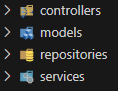
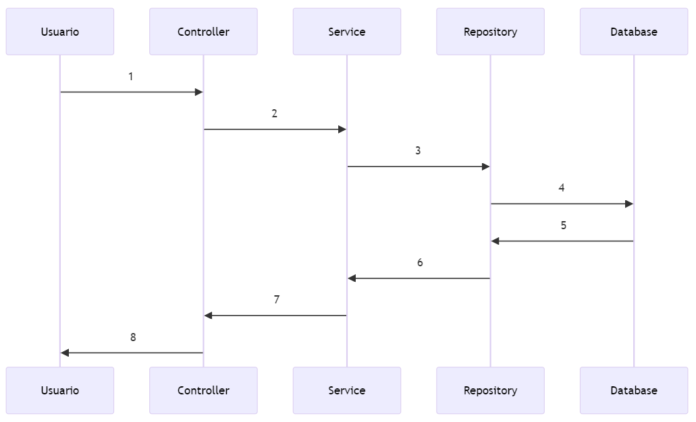

<!DOCTYPE html>
<html lang="en">
  <head>
    <meta charset="utf-8" />
    <meta name="viewport" content="width=device-width, initial-scale=1.0, maximum-scale=1.0, user-scalable=no" />

    <title></title>
    <link rel="stylesheet" href="dist/reveal.css" />
    <link rel="stylesheet" href="dist/theme/league.css" id="theme" />
    <link rel="stylesheet" href="plugin/highlight/zenburn.css" />
	<link rel="stylesheet" href="css/layout.css" />
	<link rel="stylesheet" href="plugin/customcontrols/style.css">


    <script defer src="dist/fontawesome/all.min.js"></script>

	<script type="text/javascript">
		var forgetPop = true;
		function onPopState(event) {
			if(forgetPop){
				forgetPop = false;
			} else {
				parent.postMessage(event.target.location.href, "app://obsidian.md");
			}
        }
		window.onpopstate = onPopState;
		window.onmessage = event => {
			if(event.data == "reload"){
				window.document.location.reload();
			}
			forgetPop = true;
		}

		function fitElements(){
			const itemsToFit = document.getElementsByClassName('fitText');
			for (const item in itemsToFit) {
				if (Object.hasOwnProperty.call(itemsToFit, item)) {
					var element = itemsToFit[item];
					fitElement(element,1, 1000);
					element.classList.remove('fitText');
				}
			}
		}

		function fitElement(element, start, end){

			let size = (end + start) / 2;
			element.style.fontSize = `${size}px`;

			if(Math.abs(start - end) < 1){
				while(element.scrollHeight > element.offsetHeight){
					size--;
					element.style.fontSize = `${size}px`;
				}
				return;
			}

			if(element.scrollHeight > element.offsetHeight){
				fitElement(element, start, size);
			} else {
				fitElement(element, size, end);
			}		
		}


		document.onreadystatechange = () => {
			fitElements();
			if (document.readyState === 'complete') {
				if (window.location.href.indexOf("?export") != -1){
					parent.postMessage(event.target.location.href, "app://obsidian.md");
				}
				if (window.location.href.indexOf("print-pdf") != -1){
					let stateCheck = setInterval(() => {
						clearInterval(stateCheck);
						window.print();
					}, 250);
				}
			}
	};


        </script>
  </head>
  <body>
    <div class="reveal">
      <div class="slides"><section  data-markdown><script type="text/template"><!-- .slide: class="drop" -->
<div class="" style="position: absolute; left: 0px; top: 0px; height: 700px; width: 960px; min-height: 700px; display: flex; flex-direction: column; align-items: center; justify-content: center" absolute="true">

## PROYECTO
# Biblioteca
</div>

<aside class="notes"><p>slides completas para realizar paso a paso el proyecto</p>
</aside></script></section><section  data-markdown><script type="text/template"><!-- .slide: class="drop" -->
<div class="" style="position: absolute; left: 0px; top: 0px; height: 700px; width: 960px; min-height: 700px; display: flex; flex-direction: column; align-items: center; justify-content: center" absolute="true">

# Entidades

- socios/miembros
- elementos
- copias
- préstamos
</div></script></section><section  data-markdown><script type="text/template"><!-- .slide: class="drop" -->
<div class="" style="position: absolute; left: 0px; top: 0px; height: 700px; width: 960px; min-height: 700px; display: flex; flex-direction: column; align-items: center; justify-content: center" absolute="true">

# Entidades

- members
- items
- copies
- loans
</div></script></section><section  data-markdown><script type="text/template"><!-- .slide: class="drop" -->
<div class="" style="position: absolute; left: 0px; top: 0px; height: 700px; width: 960px; min-height: 700px; display: flex; flex-direction: column; align-items: center; justify-content: center" absolute="true">

<div class="mermaid">

classDiagram 
	Item "1" <-- "*" Copy
	Loan "*" ..> "*" Copy
	Loan "*" ..> "*" Member

	class Member{ 
		- long id
		- String username
		- String name
		- &shy;<!-- .element: class="fragment" data-fragment-index="1" -->loans() List<Loan> 
	} 
	
	class Item{ 
		- int id	
		- String title
		- int minimum_age
		- Date released_at
		- ...
		- &shy;<!-- .element: class="fragment" data-fragment-index="2" -->copies() List<Copy>
	} 
	class Copy{ 
		- int id
		- int item_id
		- &shy;<!-- .element: class="fragment" data-fragment-index="3" -->item() Item 
	}
	
	class Loan{ 
		- int id
		- int copy_id
		- int member_id
		- Date created_at
		- Date finished_at
		- &shy;<!-- .element: class="fragment" data-fragment-index="4" -->returned() void
	}


</div>
</div></script></section><section  data-markdown><script type="text/template"><!-- .slide: class="drop" -->
<div class="" style="position: absolute; left: 0px; top: 0px; height: 700px; width: 960px; min-height: 700px; display: flex; flex-direction: column; align-items: center; justify-content: center" absolute="true">

# Estructurar


</div>

<aside class="notes"><p>Los Servicios los vamos a evitar hasta que adquieran algo de complejidad</p>
<ul>
<li>models</li>
<li>controllers</li>
<li>repositories</li>
<li>services (casos de uso)</li>
</ul>
<p>En muchos tutoriales recomiendan en los services tener uno para cada tipo de elemento y meter todas las acciones ahí. En nuestro caso, members, items, copies...</p>
<p>Pero a mi me gusta más y va mas relacionado con el primer punto de SOLID que cada caso de uso tenga su propia clase, nunca sabes cual va a crecer en complejidad, tener todo en un mismo archivo al final pierde el contexto.</p>
</aside></script></section><section  data-markdown><script type="text/template"><!-- .slide: class="drop" -->
<div class="" style="position: absolute; left: 0px; top: 0px; height: 700px; width: 960px; min-height: 700px; display: flex; flex-direction: column; align-items: center; justify-content: center" absolute="true">


</div>

<aside class="notes"><div class="mermaid">
sequenceDiagram
    participant user as Usuario
    participant controller as Controller
    participant service as Service
    participant repository as Repository
    participant database as Database
    
<pre><code>user-&gt;&gt;controller:1
controller-&gt;&gt;service:2
service-&gt;&gt;repository:3
repository-&gt;&gt;database:4
database-&gt;&gt;repository:5
repository-&gt;&gt;service:6
service-&gt;&gt;controller:7
controller-&gt;&gt;user:8
</code></pre>
</div></aside></script></section><section  data-markdown><script type="text/template"><!-- .slide: class="drop" -->
<div class="" style="position: absolute; left: 0px; top: 0px; height: 700px; width: 960px; min-height: 700px; display: flex; flex-direction: column; align-items: center; justify-content: center" absolute="true">

# Members

## Guiado
</div>

<aside class="notes"><p>El apartado de items lo voy a hacer yo completo</p>
<p>/items</p>
<p>GET - listar
GET id - Detalle
POST - Crear
PUT id - Modificar
DELETE id - Eliminar</p>
</aside></script></section><section  data-markdown><script type="text/template"><!-- .slide: class="drop" -->
<div class="" style="position: absolute; left: 0px; top: 0px; height: 700px; width: 960px; min-height: 700px; display: flex; flex-direction: column; align-items: center; justify-content: center" absolute="true">

# Member
- id
- username
- email
</div></script></section><section  data-markdown><script type="text/template"><!-- .slide: class="drop" -->
<div class="" style="position: absolute; left: 0px; top: 0px; height: 700px; width: 960px; min-height: 700px; display: flex; flex-direction: column; align-items: center; justify-content: center" absolute="true">

# Modelo

```java [1-12| 1 | 8-11 | 6-8]
@Entity(name = "members")
@Data
@Builder
public class Member {
    
    @Id
    @GeneratedValue(strategy = GenerationType.IDENTITY)
    private long id;

    private String username;
    private String email;
}
```
</div></script></section><section  data-markdown><script type="text/template"><!-- .slide: class="drop" -->
<div class="" style="position: absolute; left: 0px; top: 0px; height: 700px; width: 960px; min-height: 700px; display: flex; flex-direction: column; align-items: center; justify-content: center" absolute="true">

# Repositorio

```java
@Repository
public interface MembersRepository extends JpaRepository<Member, Long>{
}
```
</div>

<aside class="notes"><p>al extender JPA ya nos tendrá disponible una serie de métodos</p>
</aside></script></section><section  data-markdown><script type="text/template"><!-- .slide: class="drop" -->
<div class="" style="position: absolute; left: 0px; top: 0px; height: 700px; width: 960px; min-height: 700px; display: flex; flex-direction: column; align-items: center; justify-content: center" absolute="true">

# Controlador

```java
@RestController
@RequestMapping("members")
public class MembersController {
    
    @Autowired MemberRepository repository;

    @GetMapping
    public List<Member> findAll() {
        return repository.findAll();
    }
    
    @PostMapping
    public Member save(Member member) { 
        return repository.save(member); 
    }

    @GetMapping("{memberId}")
    public Member findByid(@PathVariable("memberId")Long memberId) {
        return repository.findById(memberId).orElseThrow();
    }

}
```
</div>

<aside class="notes"><p>@RequestMapping se puede añadir sufijo a la ruta</p>
<p>en cada @XXXMapping se puede añadir info adicional de la ruta</p>
<p>@Controller es parar gestionar vistas y @RestController para una API Rest</p>
</aside></script></section><section  data-markdown><script type="text/template"><!-- .slide: class="drop" -->
<div class="" style="position: absolute; left: 0px; top: 0px; height: 700px; width: 960px; min-height: 700px; display: flex; flex-direction: column; align-items: center; justify-content: center" absolute="true">

# OpenAPI

En el **`pom.xml`** añadimos la dependencia para generar OpenAPI
```xml
<dependency>
	<groupId>org.springdoc</groupId>
	<artifactId>springdoc-openapi-starter-webmvc-ui</artifactId>
	<version>2.3.0</version>
</dependency>
```
</div></script></section><section  data-markdown><script type="text/template"><!-- .slide: class="drop" -->
<div class="" style="position: absolute; left: 0px; top: 0px; height: 700px; width: 960px; min-height: 700px; display: flex; flex-direction: column; align-items: center; justify-content: center" absolute="true">

# OpenAPI 

http://localhost:8080/swagger-ui/index.html
</div></script></section><section  data-markdown><script type="text/template"><!-- .slide: class="drop" -->
<div class="" style="position: absolute; left: 0px; top: 0px; height: 700px; width: 960px; min-height: 700px; display: flex; flex-direction: column; align-items: center; justify-content: center" absolute="true">

# OpenAPI

Jugar metiendo nuevos datos, listando y viendo detalle
</div></script></section><section  data-markdown><script type="text/template"><!-- .slide: class="drop" -->
<div class="" style="position: absolute; left: 0px; top: 0px; height: 700px; width: 960px; min-height: 700px; display: flex; flex-direction: column; align-items: center; justify-content: center" absolute="true">

# Items

## Replicar comportamiento
</div></script></section><section  data-markdown><script type="text/template"><!-- .slide: class="drop" -->
<div class="" style="position: absolute; left: 0px; top: 0px; height: 700px; width: 960px; min-height: 700px; display: flex; flex-direction: column; align-items: center; justify-content: center" absolute="true">

# Modelo

```java
@Entity(name = "items")
@Data
@Builder
public class Item {
    
    public static final String LIBRO = "libro";
    public static final String DISCO = "disco";
    public static final String JUEGO = "juego";

	@Id
    @GeneratedValue(strategy = GenerationType.IDENTITY)
    private long id;

    private String type;
    private String title;
    private String author;
    private String image;
    private float duration;
    @Column(name="minimum_age")
    private int minimumAge;
    @Column(name="released_at")
    @Temporal(TemporalType.DATE)
    private Date releasedAt;
}

```
</div></script></section><section  data-markdown><script type="text/template"><!-- .slide: class="drop" -->
<div class="" style="position: absolute; left: 0px; top: 0px; height: 700px; width: 960px; min-height: 700px; display: flex; flex-direction: column; align-items: center; justify-content: center" absolute="true">

# Repositorio


```java
@Repository
public interface ItemsRepository extends JpaRepository<Item, Long>{
    
}
```
</div></script></section><section  data-markdown><script type="text/template"><!-- .slide: class="drop" -->
<div class="" style="position: absolute; left: 0px; top: 0px; height: 700px; width: 960px; min-height: 700px; display: flex; flex-direction: column; align-items: center; justify-content: center" absolute="true">

# Controlador

```java
@RestController
@RequestMapping("items")
public class ItemsController {
    
    @Autowired ItemsRepository repository;
    
    @PostMapping
    public ResponseEntity<Item> save(@RequestBody Item item) { 
        return saveItemService.response(item);
    }
    
    @GetMapping 
    public List<Item> get(){ 
        return repository.findAll(); 
    }
    
    @GetMapping("{itemId}")
    public Item findBy(@PathVariable("itemId") Long itemId) { 
            return repository.findById(itemId).orElseThrow(); 
    }
}

```
</div></script></section><section  data-markdown><script type="text/template"><!-- .slide: class="drop" -->
<div class="" style="position: absolute; left: 0px; top: 0px; height: 700px; width: 960px; min-height: 700px; display: flex; flex-direction: column; align-items: center; justify-content: center" absolute="true">

# DTO

## Data Transfer Object
</div>

<aside class="notes"><p>Objetos para transferir información</p>
</aside></script></section><section  data-markdown><script type="text/template"><!-- .slide: class="drop" -->
<div class="" style="position: absolute; left: 0px; top: 0px; height: 700px; width: 960px; min-height: 700px; display: flex; flex-direction: column; align-items: center; justify-content: center" absolute="true">

# DTO

## ¿al guardar que pasa si cambio id?
</div></script></section><section  data-markdown><script type="text/template"><!-- .slide: class="drop" -->
<div class="" style="position: absolute; left: 0px; top: 0px; height: 700px; width: 960px; min-height: 700px; display: flex; flex-direction: column; align-items: center; justify-content: center" absolute="true">

# DTO

## Si la API la están usando, ¿qué pasa si cambias una campo de la base de datos?
</div>

<aside class="notes"><p>dejan de funcionar las aplicaciones</p>
</aside></script></section><section  data-markdown><script type="text/template"><!-- .slide: class="drop" -->
<div class="" style="position: absolute; left: 0px; top: 0px; height: 700px; width: 960px; min-height: 700px; display: flex; flex-direction: column; align-items: center; justify-content: center" absolute="true">

- ¿su propia carpeta? dto
- ¿dentro de modelos? /models/dto
- ¿describir el openapi y que se generen automáticamente?
</div></script></section><section  data-markdown><script type="text/template"><!-- .slide: class="drop" -->
<div class="" style="position: absolute; left: 0px; top: 0px; height: 700px; width: 960px; min-height: 700px; display: flex; flex-direction: column; align-items: center; justify-content: center" absolute="true">

# DTO

## Rehacer las tareas de guardados con DTOs
</div></script></section></div>
    </div>

    <script src="dist/reveal.js"></script>

    <script src="plugin/markdown/markdown.js"></script>
    <script src="plugin/highlight/highlight.js"></script>
    <script src="plugin/zoom/zoom.js"></script>
    <script src="plugin/notes/notes.js"></script>
    <script src="plugin/math/math.js"></script>
	<script src="plugin/mermaid/mermaid.js"></script>
	<script src="plugin/chart/chart.min.js"></script>
	<script src="plugin/chart/plugin.js"></script>
	<script src="plugin/customcontrols/plugin.js"></script>

    <script>
      function extend() {
        var target = {};
        for (var i = 0; i < arguments.length; i++) {
          var source = arguments[i];
          for (var key in source) {
            if (source.hasOwnProperty(key)) {
              target[key] = source[key];
            }
          }
        }
        return target;
      }

	  function isLight(color) {
		let hex = color.replace('#', '');

		// convert #fff => #ffffff
		if(hex.length == 3){
			hex = `${hex[0]}${hex[0]}${hex[1]}${hex[1]}${hex[2]}${hex[2]}`;
		}

		const c_r = parseInt(hex.substr(0, 2), 16);
		const c_g = parseInt(hex.substr(2, 2), 16);
		const c_b = parseInt(hex.substr(4, 2), 16);
		const brightness = ((c_r * 299) + (c_g * 587) + (c_b * 114)) / 1000;
		return brightness > 155;
	}

	var bgColor = getComputedStyle(document.documentElement).getPropertyValue('--r-background-color').trim();
	var isLight = isLight(bgColor);

	if(isLight){
		document.body.classList.add('has-light-background');
	} else {
		document.body.classList.add('has-dark-background');
	}

      // default options to init reveal.js
      var defaultOptions = {
        controls: true,
        progress: true,
        history: true,
        center: true,
        transition: 'default', // none/fade/slide/convex/concave/zoom
        plugins: [
          RevealMarkdown,
          RevealHighlight,
          RevealZoom,
          RevealNotes,
          RevealMath.MathJax3,
		  RevealMermaid,
		  RevealChart,
		  RevealCustomControls,
        ],


    	allottedTime: 120 * 1000,

		mathjax3: {
			mathjax: 'plugin/math/mathjax/tex-mml-chtml.js',
		},
		markdown: {
		  gfm: true,
		  mangle: true,
		  pedantic: false,
		  smartLists: false,
		  smartypants: false,
		},

		mermaid: {
			theme: isLight ? 'default' : 'dark',
		},

		customcontrols: {
			controls: [
			]
		},
      };

      // options from URL query string
      var queryOptions = Reveal().getQueryHash() || {};

      var options = extend(defaultOptions, {"width":960,"height":700,"margin":0.04,"controls":true,"progress":true,"slideNumber":false,"transition":"slide","transitionSpeed":"default","mermaid":"themeVariables: fontSize: 64px theme: ‘forest’"}, queryOptions);
    </script>

    <script>
      Reveal.initialize(options);
    </script>
  </body>

  <!-- created with Advanced Slides -->
</html>
